- シグマ推定値：履歴値が指定されている場合は、この履歴値が使用され、それ以外の場合は、データから推定されます。
- Xbar管理図
- プロットされる点: 各サブグループの観測値の平均値。
-
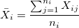
- ここで、
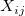
は サブグループ内の
サブグループ内の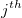
の観測値、 は
は サブグループ内の観測値の数です。
サブグループ内の観測値の数です。
-
- 中心線: プロセス平均を表し、指定されている場合は履歴値を使用します。指定されていない場合は、次のように計算されたデータの平均値を使用します。
-
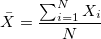
, ここで は全観測数です。
は全観測数です。
-
- 管理限界
- 各サブグループで、下側管理限界(LCL)は
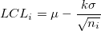
で計算されます。 - 各サブグループで、上側管理限界(UCL)は
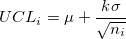
で計算されます。 - ここで、
 はプロセス平均、
はプロセス平均、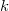
はテスト1のパラメータ、はプロセス標準偏差、はサブグループ内の観察数です。
- 各サブグループ
- プロットされる点: 各サブグループの観測値の平均値。
- R管理図
- プロットされる点: 各サブグループの範囲。
-
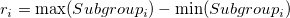
-
- 中心線
-
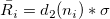
、ここで、はサブグループにおける観測値の数、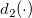
は無偏定数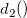
の値、はプロセス標準偏差です。
-
- 管理限界
- 各サブグループで、下側管理限界(LCL)は
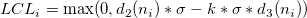
で計算されます。 - 各サブグループで、上側管理限界(UCL)は
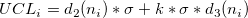
で計算されます。 - ここで、はテスト1のパラメータ、はプロセス標準偏差、はサブグループ内の観測値の数、は無偏定数の値、
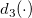
は無偏定数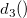
の値です。
- 各サブグループ
- プロットされる点: 各サブグループの範囲。
 の標準偏差。
の標準偏差。 は次の式で計算されます。
は次の式で計算されます。
") は無偏定数、
は無偏定数、 は移動範囲内のサンプル数です。
は移動範囲内のサンプル数です。 は観測値、
は観測値、 値の移動範囲をプロットする。
値の移動範囲をプロットする。 は第
は第 は逆累積分布関数です。
は逆累積分布関数です。 は第
は第 はプロセス不良率、はテスト1のパラメータ、
はプロセス不良率、はテスト1のパラメータ、 をZスコアに変換します。
をZスコアに変換します。 は長さ2の移動範囲の平均値です。
は長さ2の移動範囲の平均値です。 は上記で計算したシグマZです。
は上記で計算したシグマZです。 はプロセス平均、はテスト1のパラメータです。
はプロセス平均、はテスト1のパラメータです。 は決定間隔、はプロセス標準偏差、
は決定間隔、はプロセス標準偏差、